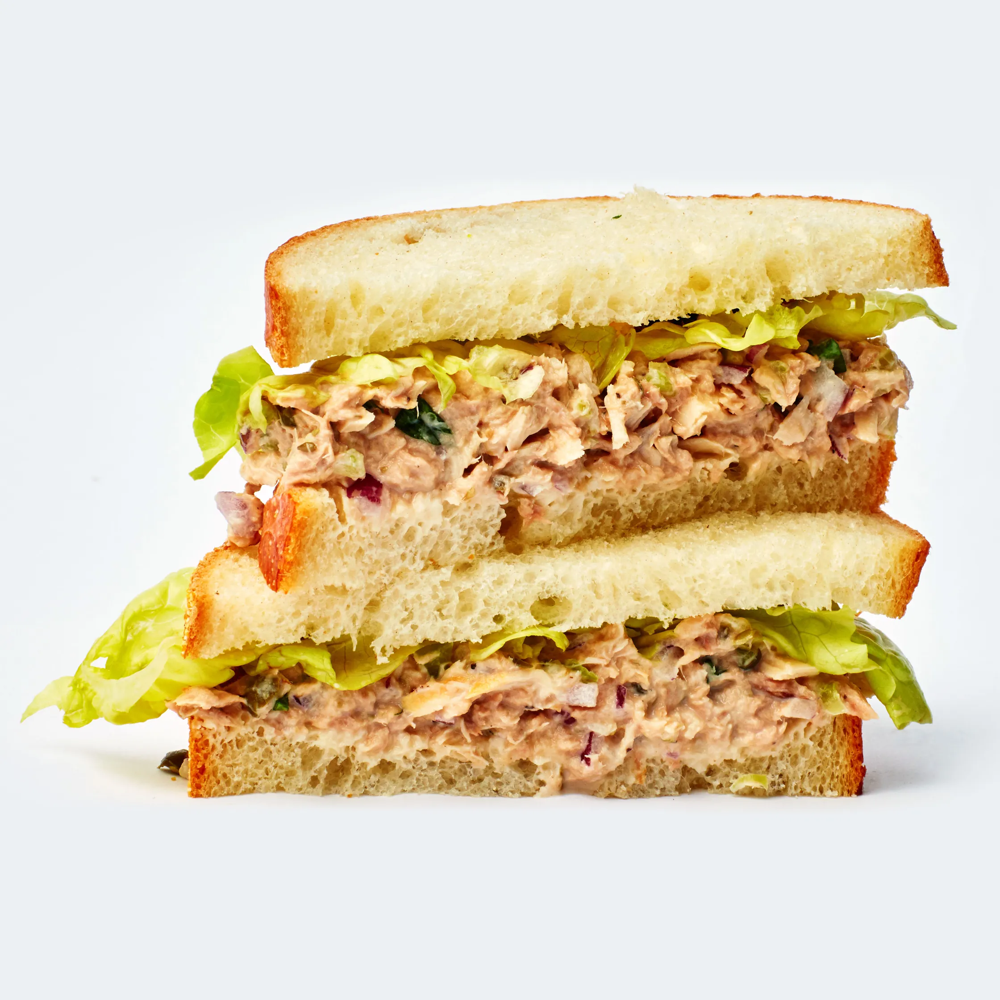

Tuna Sandwich

Description
This recipe will teach you how to make the most delicious tuna mayo
sandwich in the world, Minchella style!
Ingredients
- 2 slices Bread
- 1 tin Tuna
- 1/2 tin Sweetcorn
- Lots of Mayo
- A bit of Cucumber
Steps
- Slice bread
- Drain the tuna and sweetcorn
- Combine tuna, mayo and sweetcorn
- Mix well with a fork
- Dollop tuna mix onto one slice of bread
- Slice cucumber
- Put cucumber onto tuna mix
- Place other slice on top and enjoy!